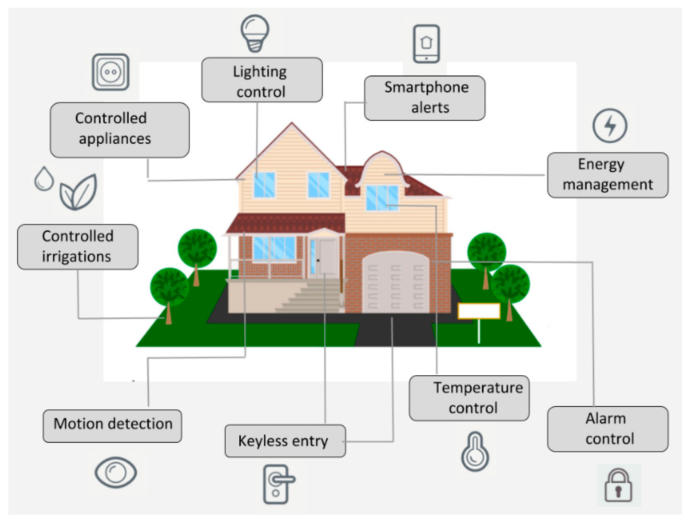

IOE
10 Marks
Discuss how IoT analytics can be effectively utilized within IoT-based healthcare systems. Also, mention some essential parameters that should be incorporated into the patient dashboard for comprehensive monitoring and management of health data. (2024)
IoT analytics plays a pivotal role in enhancing healthcare systems by enabling the collection, analysis, and interpretation of data generated by connected devices.
Here’s how IoT analytics can be effectively utilized in IoT-based healthcare systems:
Utilization of IoT Analytics in Healthcare
- Real-time Monitoring: Continuous data collection from wearables enables timely responses to patient health changes.
- Predictive Analytics: Analyzing historical data helps foresee potential health issues, allowing for proactive interventions.
- Personalized Treatment Plans: Tailoring treatment based on data from various sources improves therapy effectiveness.
- Resource Optimization: Efficient management of equipment and patient flow enhances staff allocation and reduces wait times.
- Population Health Management: Analyzing aggregated data helps identify health trends and outbreaks in specific demographics.
- Improved Decision Making: Data-driven insights support healthcare professionals in enhancing the quality of care.
Essential Dashboard Parameters
- Vital Signs: Continuous tracking of heart rate, blood pressure, etc.
- Medication Adherence: Monitoring of medication schedules and adherence levels.
- Physical Activity: Data on steps and exercise to encourage healthy lifestyles.
- Sleep Patterns: Insights into sleep quality and duration.
- Chronic Condition Monitoring: Metrics for managing conditions like diabetes.
- Patient-reported Outcomes: Feedback on symptoms and well-being.
- Emergency Alerts: Notifications for critical health changes.
- Historical Data Trends: Visualizations of health metrics over time.
- Telehealth Integration: Access to virtual consultations.
- Education Resources: Tailored materials for informed decision-making.
Evaluate long-range communication systems and protocols like LTE, LTE-A, LoRa, and LoRaWAN in the context of IoT connectivity. Discuss their suitability for different IoT use cases based on factors like coverage, data rate, power consumption, and scalability.(2024)
- LTE (Long-Term Evolution)
- Coverage: Extensive coverage, suitable for urban and suburban environments. It leverages existing cellular infrastructure.
- Data Rate: High data rates (up to 300 Mbps) make it suitable for applications requiring substantial data transfer, like video streaming and high-frequency sensor data.
- Power Consumption: Higher power consumption compared to low-power alternatives, making it less suitable for battery-operated IoT devices that need long lifespans.
- Scalability: Can support a large number of devices but may face congestion issues in densely populated areas.
- Use Cases: Smart cities, connected vehicles, and health monitoring where high bandwidth is necessary.
- LTE-A (LTE Advanced)
- Coverage: Improved coverage over standard LTE, including better support for rural areas and high-density urban environments.
- Data Rate: Even higher data rates (up to 1 Gbps) due to advanced features like carrier aggregation.
- Power Consumption: Similar to LTE, but advanced power-saving features can help reduce consumption somewhat.
- Scalability: Enhanced capacity to support more devices, making it suitable for IoT deployments in crowded areas.
- Use Cases: Advanced smart city applications, augmented reality in transportation, and real-time health data transmission.
- LoRa (Long Range)
- Coverage: Excellent long-range capabilities (up to 15 km in rural areas), with the ability to penetrate urban environments.
- Data Rate: Lower data rates (up to 50 kbps), suitable for applications that transmit small amounts of data infrequently.
- Power Consumption: Very low power consumption, allowing devices to operate for years on a single battery.
- Scalability: Highly scalable, supporting thousands of devices in a single gateway coverage area.
- Use Cases: Smart agriculture, environmental monitoring, and asset tracking where low data rates and long-range connectivity are sufficient.
- LoRaWAN (LoRa Wide Area Network)
- Coverage: Similar long-range capabilities as LoRa, leveraging a star topology with gateways.
- Data Rate: Low to moderate data rates (0.3 kbps to 50 kbps), ideal for sporadic transmission of small data packets.
- Power Consumption: Extremely low power consumption, facilitating long battery life for devices (typically 5-10 years).
- Scalability: Highly scalable, designed for massive IoT networks, making it effective for urban and rural deployments.
- Use Cases: Smart metering, smart cities, and industrial IoT applications where infrequent data transmission and extended battery life are crucial.
| Protocol | Coverage | Data Rate | Power Consumption | Scalability | Use Cases |
|---|---|---|---|---|---|
| LTE | Extensive | Up to 300 Mbps | Moderate | Moderate | Smart cities, connected vehicles, health monitoring |
| LTE-A | Improved | Up to 1 Gbps | Moderate | High | Advanced smart city applications, AR, real-time health data |
| LoRa | Excellent | Up to 50 kbps | Very Low | High | Smart agriculture, environmental monitoring, asset tracking |
| LoRaWAN | Excellent | 0.3 - 50 kbps | Very Low | Very High | Smart metering, industrial IoT, smart cities |
Define the role of analytics in IoT technology and elaborate the challenges associated with it. (2024)
The Role of Analytics in IoT Technology
Analytics is the heart of IoT. It transforms raw data generated by connected devices into actionable insights. Here are some key roles:
- Data Processing: Filters and processes massive data streams to extract valuable information.
- Real-time Monitoring: Enables immediate responses to changes, crucial for applications like healthcare and industrial automation.
- Predictive Analytics: Forecasts trends and potential issues based on historical data.
- Anomaly Detection: Identifies unusual patterns that may indicate faults or security breaches.
- Decision Support: Provides insights that inform strategic decisions.
Challenges Associated with IoT Analytics
- Data Volume and Velocity: The high volume and rapid generation of data can overwhelm processing systems.
- Data Variety: Diverse data formats complicate integration and analysis.
- Scalability: Increased device connections challenge the ability to scale analytics solutions.
- Data Quality: Inaccurate data can lead to misleading insights.
- Security and Privacy: Protecting sensitive data while ensuring compliance is crucial.
| Type of Analytics | Focus | Objective | Example |
|---|---|---|---|
| Descriptive Analytics | Understanding past data and trends | Summarizing historical data to describe what happened | Analyzing past temperature readings to understand the performance of a heating system |
| Diagnostic Analytics | Understanding why something happened | Identifying the root cause of problems | Analyzing sensor data to figure out why a machine failed |
| Predictive Analytics | Forecasting future events or behaviors | Anticipating future trends or failures | Predicting when equipment will require maintenance based on sensor data |
| Prescriptive Analytics | Recommending actions for the future | Suggesting optimal actions to take | Recommending preventive measures to avoid a machine breakdown |
Elaborate the need for a new network architecture in IoT. (2024) (2023 May)
As the number of connected devices continues to skyrocket, traditional network architectures are struggling to meet the unique demands of IoT. This has necessitated the development of new network architectures specifically designed to handle the scale, diversity, and low-latency requirements of IoT applications.
Here are some key factors driving the need for a new network architecture:
- Massive Scale and Device Heterogeneity: Billions of devices with varying capabilities and connectivity requirements.
- Low-Latency and Real-Time Requirements: Time-sensitive applications require real-time data processing and decision-making.
- Security and Privacy Concerns: Protecting sensitive data generated by IoT devices.
- Power Constraints and Energy Efficiency: Energy-efficient communication protocols and network architectures for battery-powered devices.
- Network Slicing and Resource Allocation: Customized services and dynamic resource allocation for different IoT applications.
To address these challenges, new network architectures are emerging, such as:
- 5G Networks: With enhanced capabilities like low latency, high bandwidth, and network slicing, 5G is well-suited for IoT applications.
- LPWAN Technologies: Low-Power Wide-Area Networks (LPWAN) like LoRaWAN and NB-IoT are designed for low-power, long-range IoT devices.
- Edge Computing: Processing data closer to the source reduces latency and bandwidth consumption.
- Fog Computing: A decentralized computing model that distributes processing tasks across edge devices and cloud servers.
Compare edge, fog and cloud computing with respect to their hierarchy. (2024) (2023 Dec) (2023 May)
flowchart TD 1[Cloud Computing]-->2[Fog Computing] 2-->3[Edge Computing]
| Aspect | Edge Computing | Fog Computing | Cloud Computing |
|---|---|---|---|
| Location | Local devices | Intermediate layer | Centralized data centers |
| Latency | Very low | Low | Higher |
| Bandwidth Usage | Minimizes usage | Reduces usage | Higher usage |
| Scalability | Limited | More scalable | Highly scalable |
| Data Storage | Minimal storage | Temporary storage | Extensive storage |
| Use Cases | Real-time apps | Low-latency applications | Heavy processing |
| Management | Limited management | Requires managing fog and edge | Centralized management |
| Security | Device-level risks | Enhanced but still risky | Robust protocols, potential risks |
Consider a smart smoke detection system. Elaborate its working and list the different types of sensors and actuators required during the deployment scenario.(2024)
A smart smoke detection system enhances traditional smoke detectors by integrating IoT technology, allowing for real-time monitoring, alerts, and automation.
Here’s how it works and the components involved:
- Smoke Detection: Various sensors detect smoke particles and air quality changes, triggering alerts when smoke is present.
- Data Processing: Sensor data is processed locally or sent to the cloud, enabling differentiation between false alarms (like cooking smoke) and actual fire threats.
- Alert Mechanism: The system sends real-time alerts to users via smartphone apps, SMS, or email upon smoke detection.
- Automated Responses: It activates actuators for responses, such as turning on ventilation, engaging fire suppression systems, or unlocking doors for safe exits.
- Remote Monitoring: Users can monitor air quality and smoke levels remotely, accessing real-time data and historical trends.
- Integration with Other Systems: The smoke detection system can connect with other smart home devices (e.g., security systems) for enhanced safety.
Types of Sensors and Actuators Required
Sensors:
- Smoke Sensors:
- Photoelectric Sensors: Detect smoke using a light beam; effective for smoldering fires.
- Ionization Sensors: Use radioactive material to detect fast-flaming fires.
- Temperature Sensors: Measure temperature changes to identify overheating that may indicate a fire.
- Gas Sensors: Detect harmful gases such as carbon monoxide (CO) and volatile organic compounds (VOCs), which may indicate a fire or combustion.
- Air Quality Sensors: Monitor overall air quality, including particulate matter (PM), to assess smoke presence and general safety.
- Humidity Sensors: Measure humidity levels, which can provide additional context in analyzing smoke presence and conditions.
Actuators:
- Alarm Systems: Sound alarms or sirens to alert occupants of smoke detection.
- Smart Ventilation Systems: Activate exhaust fans or open vents to clear smoke from the area.
- Fire Suppression Systems: Trigger automatic sprinklers or fire suppression systems to extinguish fires.
- Smart Locks: Unlock doors automatically to allow easy exit for occupants during an emergency.
- Lighting Systems: Activate emergency lighting to guide occupants to exits.
Explain the role of HTTP, WebSocket, and MQTT in IoT communication. Compare and contrast these protocols in terms of their characteristics, suitability for different IoT scenarios, and support for real-time data transmission. (2024)
HTTP (Hypertext Transfer Protocol)
- Role: HTTP is a request-response protocol widely used for transferring hypertext documents on the web.
- Characteristics:
- Stateless: Each request is independent, and the server does not retain session information.
- Synchronous: The client sends a request and waits for a response.
- Reliable: Established error handling and data integrity.
- Suitability:
- Best for applications where data transfer is less frequent or not time-sensitive (e.g., configuration updates, infrequent sensor readings).
- Not ideal for real-time applications due to higher latency.
Real-time Data Transmission: Limited, as it requires polling or repeated requests to check for updates, which can lead to delays.
sequenceDiagram Client->>Server: Request Server->>Client: Response Client->>Server: Request Server->>Client: Response
WebSocket
- Role: WebSocket is a protocol that enables full-duplex communication channels over a single TCP connection, allowing for real-time data exchange between clients and servers.
- Characteristics:
- Persistent connection: Once established, the connection remains open for ongoing communication.
- Low overhead: Reduces the need for repeated HTTP headers, making it more efficient for frequent messages.
- Bi-directional: Both client and server can send messages independently.
- Suitability:
- Ideal for applications requiring real-time updates, such as chat applications, live monitoring dashboards, or interactive IoT systems.
- Suitable for scenarios with frequent data exchange and low latency requirements.
Real-time Data Transmission: Excellent support, enabling instant communication with minimal delay.
sequenceDiagram Client->>Server: Request Server->>Client: Response Server->>Client: Server->>Client: Client->>Server: Request Server->>Client: Response Server->>Client: Server->>Client: Server->>Client: Connection Closed
MQTT (Message Queuing Telemetry Transport)
- Role: MQTT is a lightweight messaging protocol designed for low-bandwidth, high-latency, or unreliable networks. It uses a publish-subscribe model to facilitate communication between devices.
- Characteristics:
- Lightweight: Minimal overhead makes it suitable for constrained devices.
- Publish-Subscribe model: Allows devices to publish messages to topics, which can be subscribed to by other devices.
- Quality of Service (QoS) levels: Supports different delivery guarantees (0 - At most once, 1 - At least once, 2 - Exactly once).
- Suitability:
- Well-suited for IoT scenarios involving remote sensors, telemetry, and environments with intermittent connectivity.
- Commonly used in home automation, environmental monitoring, and fleet management.
- Real-time Data Transmission: Good support for real-time messaging, especially with QoS levels ensuring message delivery even in unreliable networks.
| Characteristic | HTTP | WebSocket | MQTT |
|---|---|---|---|
| Connection Type | Stateless (request-response) | Persistent (full-duplex) | Persistent (publish-subscribe) |
| Overhead | High (per request) | Low (once connected) | Very low |
| Latency | Higher due to polling | Low (real-time) | Low (real-time) |
| Message Delivery | Reliable, but slower | Reliable, with some overhead | QoS levels for guaranteed delivery |
| Use Cases | Configuration, infrequent updates | Real-time dashboards, chat apps | Remote sensors, telemetry |
Discuss the functional blocks of IoT architecture, highlighting their roles and interactions. Provide examples to illustrate the importance of each block in the overall functionality of IoT systems.(2024) (2023 Dec)

- Sensing Layer
- Role: The sensing layer is responsible for collecting data from physical objects and environments. It consists of sensors and actuators.
- Sensors: Devices that detect changes in the environment (e.g., temperature, humidity, motion) and convert these changes into data.
- Actuators: Devices that perform actions based on commands received (e.g., turning on a motor, adjusting a thermostat).
- Examples:
- In a smart home, temperature sensors collect data on indoor climate, while actuators adjust heating or cooling systems based on user preferences or predefined rules.
- Role: The sensing layer is responsible for collecting data from physical objects and environments. It consists of sensors and actuators.
- Network Layer
- Role: This layer provides the necessary connectivity for communication between IoT devices and the internet. It encompasses various network technologies and protocols.
- Connectivity: Includes wireless (Wi-Fi, Bluetooth, Zigbee) and wired (Ethernet) communication options, as well as cellular networks (e.g., 4G, 5G).
- Examples:
- A smart city may use a combination of Wi-Fi and cellular networks to connect streetlights, traffic cameras, and environmental sensors to a central management system.
- Role: This layer provides the necessary connectivity for communication between IoT devices and the internet. It encompasses various network technologies and protocols.
- Data Processing Layer
- Role: This layer processes, analyzes, and interprets the data collected from the sensing layer. It includes functions such as data cleaning, filtering, and aggregation.
- Processing Units: These can be local (on-device) or cloud-based, depending on the architecture.
- Analytics: Involves statistical analysis, machine learning, or artificial intelligence to derive insights from data.
- Examples:
- In a smart grid, data from smart meters is aggregated and analyzed to optimize energy distribution and reduce outages.
- In predictive maintenance, data from machinery is processed to forecast potential failures, allowing for timely interventions.
- Role: This layer processes, analyzes, and interprets the data collected from the sensing layer. It includes functions such as data cleaning, filtering, and aggregation.
- Application Layer
- Role: This layer develops smart applications that provide functionalities and services to end-users. It visualizes data and enables users to control devices based on insights.
- User Interfaces: Dashboards and mobile applications allow users to interact with the system and receive notifications.
- Examples:
- A home automation app allows users to remotely control lights, thermostats, and security systems based on real-time data from sensors.
- Role: This layer develops smart applications that provide functionalities and services to end-users. It visualizes data and enables users to control devices based on insights.
The overall data flow in this architecture is as follows:
- Data Gathering: Sensors in the sensing layer collect data from the physical environment.
- Data Transmission: The collected data is transmitted through the network layer to the data processing layer.
- Data Processing: The data is processed, analyzed, and interpreted in the data processing layer.
- Application: The processed data is used by smart applications in the application layer to provide valuable services and insights.
Elaborate on the concept of Smart Objects, including a diagram and description of their characteristics. (2024)

Smart Objects are physical items equipped with sensors, actuators, and communication capabilities, enabling them to connect to the Internet and interact with other devices and systems. These objects can collect, process, and exchange data, making them integral to the Internet of Things (IoT) ecosystem.
Characteristics of Smart Objects
- Connectivity: Smart objects can connect to networks (e.g., Wi-Fi, Bluetooth, Zigbee) to communicate with other devices, systems, and cloud platforms.
- Sensing and Actuation:
- Sensing: Equipped with sensors to monitor environmental conditions (e.g., temperature, humidity, motion, light).
- Actuation: Can control physical actions, such as turning on lights, adjusting thermostats, or opening doors.
- Data Processing: Smart objects can process data locally or send it to external systems for further analysis, enabling real-time responses to changes in their environment.
- Interactivity: They can interact with users through applications or interfaces, allowing for remote control and monitoring.
- Adaptability: They can learn from their environment and user behaviors, adapting their functions to improve efficiency and user experience.
Explain the following access technologies with their application areas: (2024)
- IEEE 802.15.4 (2024) (2023 Dec)
- LTE-A (2024)
- ZigBee
- 6LoWPAN
- CoAP
- IEEE 802.15.4 (ZigBee)
- Overview: A family of standards for wireless personal area networks (WPANs). It offers low data rates, low power consumption, and long battery life.
- IEEE 802.15.4 is also number for ZigBee
- Application Areas:
- Home automation
- Sensor networks
- Industrial automation
- Smart agriculture
- LTE-A (Long-Term Evolution Advanced)
- Overview: A 4G wireless communication standard that provides high-speed data rates and increased capacity. It is used for mobile broadband and IoT connectivity.
- Application Areas:
- Mobile broadband
- IoT connectivity
- Smart cities
- Industrial IoT
- 6LoWPAN (IPv6 over Low-Power Wireless Personal Area Networks)
- Overview: A protocol that allows IPv6 to be used over low-power wireless networks. It is used to connect IoT devices to the internet.
- Application Areas:
- IoT devices with limited resources
- Sensor networks
- Smart homes
- CoAP (Constrained Application Protocol)
- Overview: A lightweight application layer protocol designed for constrained devices. It is often used in IoT applications to transfer data efficiently.
- Application Areas:
- IoT device communication
- Constrained networks
- Sensor networks
Z-Wave (2024)
A wireless communication protocol specifically designed for home automation and control. It offers low power consumption and secure communication.
flowchart LR
pc[Primary Contoller]
sc[Secondary Controller]
pc --> s1((Slave1)) -->
s4((Slave4)) --> s5((Slave5))
s4 --> s3((Slave3))
sc --> s2((Slave2)) --> s3
Components of Z-Wave:
- Home ID: Protocol uses ID field to separate the network from each other.
- Controller: Device can communicate with all the nodes of z-wave network.
- Slaves: Nodes receive the command and performs action based on the commands.
Application Areas:
- Home automation
- Smart metering
- Security systems
RFID (2024) (2023 May)
Radio Frequency Identification is a technology that uses radio waves to identify and track objects.
Application Areas:
- Supply chain management
- Inventory tracking
- Access control
- Payment systems
Components of RFID:
1. **RFID Tag**: A device attached to an object that stores data (like an ID number) and communicates with a reader. Tags can be **passive** (no battery, powered by the reader) or **active** (battery-powered, can transmit signals).
2. **RFID Reader**: A device that emits radio waves to communicate with RFID tags and collect data. It can be handheld or fixed and connects to a system for data processing.
3. **Processing Center**: The system that processes and stores the data from the RFID reader, often integrating with business software like inventory management.
flowchart LR
A[Processing Center]
B[RFID Reader] --> |Process receive info| A
B -.-> |Continuous Radio Signal| C[RFID Tag]
C --> |Send RF tag info| B
Elaborate in detail the strategies to organize data for IoT analytics. (2023 Dec)
Organizing data for IoT analytics is crucial for extracting valuable insights and making informed decisions. Given the vast amounts of data generated by IoT devices, effective data management strategies are essential.
Here are some key strategies to consider:
- Data Collection and Ingestion
- Automated Ingestion: Use APIs and message queues for continuous data collection from devices.
- Processing Methods: Choose between real-time (stream processing) and batch processing based on application needs.
- Data Storage Solutions
- Hierarchical Storage:
- Edge Storage: Local storage to reduce latency; essential data sent to the cloud.
- Cloud Storage: For scalable, long-term data storage and analytics.
- Database Options:
- Time-Series Databases: For time-stamped data (e.g., InfluxDB).
- NoSQL Databases: Flexible handling of unstructured data (e.g., MongoDB).
- Relational Databases: For structured data with defined relationships (e.g., MySQL).
- Hierarchical Storage:
- Data Preprocessing and Cleaning
- Normalization: Standardize formats and units across data sources.
- Validation: Filter out errors and duplicates.
- Data Structuring and Organization
- Tagging and Metadata: Use tags for better categorization and searchability.
- Data Lakes: Store raw data in various formats for flexible analytics.
- Data Integration
- APIs and Middleware: Ensure seamless data flow from various devices.
- ETL Processes: Extract, transform, and load data into a unified analytics platform.
- Data Analytics Frameworks
- Real-Time Analytics: Utilize frameworks like Apache Kafka for instant insights.
- Batch Analytics: Employ Hadoop for processing large datasets periodically.
- Data Visualization and Reporting
- Custom Reports: Tailor reports to summarize key insights for specific user needs.
- Security and Compliance
- Data Encryption: Protect data at rest and in transit.
- Access Control: Implement measures to restrict data access to authorized users.
Illustrate the role of data refineries in preventing data lakes from turning into data swamps. (2023 Dec)
A data lake, while a powerful tool for storing vast amounts of raw data, can quickly turn into a data swamp if not properly managed. This is where data refineries come into play. They are essentially data processing pipelines that transform raw data into refined, usable information.
How Data Refineries Work
- Data Ingestion: Raw data from various sources, including IoT devices, is ingested into the data lake.
- Data Cleaning and Standardization: Data is cleaned to remove inconsistencies, errors, and missing values. It's standardized to ensure uniformity across different data sources.
- Data Transformation: Raw data is transformed into a suitable format for analysis. This may involve data aggregation, filtering, and normalization.
- Data Enrichment: Additional context or relevant information is added to the data to increase its value.
- Data Security and Privacy: Data is secured and anonymized to protect sensitive information.
The Role of Data Refineries
- Prevent Data Swamp: By organizing and structuring data, data refineries prevent data lakes from becoming cluttered and unusable.
- Improve Data Quality: By cleaning and standardizing data, data refineries ensure that the data is accurate and reliable.
- Enhance Data Accessibility: By organizing data into a structured format, data refineries make it easier for analysts and data scientists to access and analyze the data.
- Protect Data Privacy: By implementing security measures, data refineries protect sensitive data from unauthorized access.
Describe the communication systems and protocols involved in the long-range communication system of IoT. (2023 Dec)
Long-range communication systems are essential for IoT applications that require extended coverage, low power consumption, and reliable data transmission.
Here are some of the key communication systems and protocols used in long-range IoT:
- Cellular Networks:
- LTE-M and NB-IoT: These are cellular technologies specifically designed for IoT applications, offering low power consumption, long range, and reliable connectivity.
- 5G: The latest generation of cellular technology offers even higher data rates, lower latency, and improved coverage, making it suitable for a wide range of IoT applications.
- Low-Power Wide-Area Networks (LPWANs):
- LoRaWAN: A popular LPWAN protocol that uses spread-spectrum modulation to achieve long range and low power consumption. It is well-suited for applications like smart cities, agriculture, and logistics.
- Sigfox: Another LPWAN protocol that focuses on ultra-low power consumption and long range. It is ideal for applications with minimal data requirements, such as asset tracking and environmental monitoring.
Communication Protocols
- HTTP: While traditionally used for web-based communication, HTTP can be used for IoT devices to send data to a server. However, it's not the most efficient protocol for real-time data transmission.
- WebSocket: A protocol designed for full-duplex, bidirectional communication over a single TCP connection. It's well-suited for real-time data exchange, such as sensor data streaming.
- MQTT (Message Queuing Telemetry Transport): A lightweight, publish-subscribe messaging protocol designed for constrained devices. It's highly suitable for IoT devices with limited resources and is widely used in various IoT applications.
- CoAP (Constrained Application Protocol): A lightweight application layer protocol designed for constrained devices. It's often used in IoT applications to transfer data efficiently over low-power networks.
Consider a smart irrigation system. Elaborate its working with a block diagram and list the different types of sensors and actuators required during the deployment scenario. (2023 Dec)
A smart irrigation system is an IoT-enabled solution that optimizes water usage in agriculture and landscaping. It leverages sensors, actuators, and data analytics to automate watering schedules, reducing water waste and improving crop yield.

- Sensing System:
- Soil Moisture Sensor: Measures the moisture content of the soil.
- Temperature Sensor: Monitors ambient temperature.
- Humidity Sensor: Measures relative humidity.
- Rain Sensor: Detects rainfall.
- Control Circuit:
- This is the brain of the system, processing the sensor data and making decisions.
- It analyzes the sensor data to determine if watering is necessary.
- It sets the irrigation schedule based on the analysis.
- Water Pump:
- This component delivers water to the plants.
- The control circuit activates the pump when required.
- Soil:
- This represents the target area where water is to be delivered.
- The water pump supplies water to the soil.
- Power Supply:
- This block provides the necessary power to all components of the system.
Working of the System
- Sensor Data Acquisition: The sensors continuously monitor the soil moisture, temperature, humidity, and rainfall levels.
- Data Processing: The control circuit receives and processes the sensor data.
- Decision Making: Based on the processed data, the control circuit determines if the soil moisture level is below a predefined threshold.
- Water Pump Activation: If the soil moisture is low, the control circuit activates the water pump.
- Water Delivery: The water pump delivers water to the soil, ensuring adequate moisture.
- Continuous Monitoring: The system continues to monitor the soil moisture level and adjusts the watering schedule as needed.
Elaborate on MQTT, its working in details, and two advantages over CoAP. (2023 Dec) (2023 May) (2022)
Message Queuing Telemetry Transport is a lightweight messaging protocol designed for low-bandwidth, high-latency, or unreliable networks, making it ideal for IoT applications. It uses a publish-subscribe model, which allows devices to communicate efficiently and flexibly.
Working of MQTT
- Architecture:
- Broker: The central server that manages communication between clients. It receives messages from publishers and distributes them to subscribers based on their interests.
- Clients: Devices or applications that connect to the broker to either send (publish) or receive (subscribe to) messages.
- Publish-Subscribe Model:
- Publishing: A client publishes messages to a specific topic (e.g., "home/temperature").
- Subscribing: Other clients subscribe to that topic to receive messages. This decouples the message sender from the receiver, allowing multiple clients to receive the same message without direct communication.
- Quality of Service (QoS) Levels: MQTT provides three QoS levels to ensure message delivery:
- QoS 0: At most once (fire and forget).
- QoS 1: At least once (guaranteed delivery).
- QoS 2: Exactly once (ensures message is received only once).
Uses a request-response model, similar to HTTP.
Designed for direct device-to-device communication without an intermediary, which is suited for simple, constrained networks.
MQTT-SN
flowchart LR
p[Publisher] -.-> |Message| g([Gateway])
p2[Publisher] -.-> |Message| g
g --> b((Broker))
b --> |Message| Subscriber1
b --> |Message| Subscriber2
Optimized for low-power, low-resource sensor networks.
Works over UDP while MQTT works over TCP/IP
MQTT vs CoAP
| Feature | MQTT | CoAP |
|---|---|---|
| Full Form | Message Queuing Telemetry Transport | Constrained Application Protocol |
| Definition | Used for constrained devices (e.g: IOT devices) | Is a messaging protocol focused on asynchronous |
| Communication Model | Publish-Subscribe | Request-Response |
| Transport Protocol | TCP | UDP |
| Reliability/QoS | QoS Levels (0, 1, 2) | Confirmable/Non-confirmable |
| Overhead | Higher | Lower |
| Security | TLS | DTLS |
| Best Use Cases | Centralized IoT, messaging | Low-power, direct IoT |
| HTTP Compatibility | Limited | High |
| Use Cases | Industrial automation, real-time data | Low-power devices, simple sensor networks |
| Persistence Support | Yes, messages can be retained | No |
| Complexity | More complex due to broker architecture | Simpler implementation but less scalable |
Illustrate 3 methods for effective data visualization. (2023 Dec)
IoT Visualization_ refers to the process of representing data from connected IoT devices in visual formats like graphs, charts, and maps. It helps people understand complex IoT data easily, enabling them to make informed decisions based on the insights gained.
- Time Series Visualization: This involves using heatmaps, line charts, and area charts to analyze data patterns over time. For example, a line chart can be used to track temperature changes over time to identify trends or anomalies.
- Geospatial Visualization: Geospatial visualization involves plotting IoT data on maps to gain location-based insights. Tools such as GIS mapping, choropleth maps, and heatmaps can be used to visualize network coverage, device density, and data distribution across different locations.
- Dashboard Creation: Dashboards provide a consolidated view for monitoring important metrics and key performance indicators (KPIs). They combine multiple visualizations into a single screen, making it easier to monitor IoT data and make informed decisions.
- Interactive Visualization: Adding interactivity to IoT data visualization allows users to explore the data in more detail. Features like drill-down capabilities, filtering options, and hover-over insights enable users to uncover hidden patterns or correlations.
Consider a smart farming system. Elaborate its working and list the different types of sensors and actuators required during the deployment scenario. (2023 May)
A smart farming system utilizes IoT technology, data analytics, and automation to enhance agricultural practices, optimize resource usage, and improve crop yields. By integrating various sensors, actuators, and data processing tools, farmers can make informed decisions and manage their fields more efficiently.
Block Diagram Breakdown
- Regulated Power Supply:
- Provides stable and regulated power to the system.
- Oscillator:
- Generates a clock signal, essential for timing and synchronization within the microcontroller.
- Atmel Microcontroller:
- The "brain" of the system.
- Processes sensor data, makes decisions, and controls actuators.
- Sensors:
- Soil Moisture Sensor: Measures the moisture content of the soil.
- Temperature Sensor: Monitors ambient temperature.
- Humidity Sensor: Measures relative humidity.
- Light Sensor: Detects light intensity.
- Actuators:
- Relay: Controls the activation of other devices like motors and pumps.
- Motor: Used for various tasks such as operating pumps, fans, or robotic arms.
- LED Lights: Can be used for artificial lighting or signaling.
- GSM Modem:
- Enables wireless communication, allowing remote monitoring and control.
- Can send SMS alerts, data to a cloud platform, or receive commands from a user.
- RS232:
- Serial communication interface used for connecting the microcontroller to other devices like the GSM modem or a computer.
- LCD:
- Displays information about the system's status, sensor readings, and control settings.
Describe the IoT World Forum (IoTWF) standardized architecture. (2023 May) (2022)
flowchart TB
Application -->
Service -->
dm[Device Management] -->
Network -->
ds[Data Storage] -->
Device -->
Physical
The IoT World Forum (IoTWF) Standardized Architecture is a seven-layer model that provides a framework for understanding and designing IoT systems. It breaks down the complex IoT challenge into smaller, more manageable components.
The seven layers of the IoTWF architecture are:
- Application Layer: This is the point where users interact with the IoT system. It includes applications, data visualization, and user interfaces.
- Service Layer: This layer provides the services that enable the IoT system to function. It includes services like data analytics, machine learning, and security.
- Device Management Layer: This layer manages the devices connected to the IoT system. It includes device provisioning, configuration, and firmware updates.
- Network Layer: This layer provides the connectivity between devices and the cloud. It includes technologies like Wi-Fi, Bluetooth, cellular networks, and LPWANs.
- Data Storage Layer: This layer stores the data generated by IoT devices. It can be stored on-device, on-edge devices, or in the cloud.
- Device Layer: This layer consists of the physical devices that collect data from the environment. It includes sensors, actuators, and other devices.
- Physical Layer: This layer provides the physical infrastructure for the IoT system. It includes power sources, cabling, and other physical components.
Explain the architecture of LoRaWAN with its major characteristics. (2023 May) (2022)
LoRaWAN is a Low-Power Wide-Area Network (LPWAN) protocol designed for long-range, low-power, bidirectional communication. It's particularly suited for IoT applications that require infrequent data transmission over long distances.

- End Devices: Sensors or devices that collect data and communicate with gateways.
- Gateways: Bridge between end devices and the network server, receiving data from end devices and forwarding it to the network server.
- Network Server: Manages the network, handling end device communication, security, and data routing.
- Application Server: Receives data from the network server, processes it, and integrates
Major Characteristics of LoRaWAN
- Long Range: LoRaWAN can cover distances of several kilometers, making it suitable for wide-area IoT deployments.
- Low Power Consumption: The protocol is designed to minimize power consumption, allowing devices to operate on battery power for years.
- Scalability: LoRaWAN can support a large number of devices in a single network.
- Security: It employs robust security mechanisms to protect data privacy and integrity.
- Flexibility: LoRaWAN can accommodate various data rates and transmission frequencies.
Explain the ecosystem for an IoT-enabled smart home automation system with respect to sensors, actuators, framework, protocols, storage, data analysis, security, etc. (2023 May) (2022)

An IoT-enabled smart home automation system integrates various components and technologies to enhance the functionality, convenience, and efficiency of home management. Below is an overview of the ecosystem, detailing its key elements such as sensors, actuators, frameworks, protocols, storage, data analysis, and security.
Sensors:
- Temperature and Humidity Sensors: Monitor indoor and outdoor conditions to optimize heating, cooling, and ventilation systems.
- Motion Sensors: Detect movement to trigger lighting, security systems, or energy-saving measures.
- Door and Window Sensors: Monitor the status of doors and windows to activate alarms or security systems.
- Water Sensors: Detect leaks or water damage to prevent property damage.
- Smoke and Fire Detectors: Alert occupants and authorities in case of emergencies.
Actuators:
- Smart Plugs: Control the power supply to various devices.
- Smart Lights: Adjust lighting intensity and color temperature.
- Smart Thermostats: Regulate indoor temperature.
- Smart Locks: Control access to the home.
- Security Cameras: Monitor the surroundings and record video footage.
Framework:
- Home Automation Hub: A central device that connects all smart devices and controls their functions.
- Cloud Platform: Stores and processes data, enables remote access, and provides analytics.
Protocols:
- Wi-Fi: Provides high-speed wireless connectivity for data-intensive applications.
- Bluetooth: Enables communication between devices over short distances.
- Zigbee: Offers low-power, mesh networking for devices like sensors and actuators.
- Z-Wave: Another low-power wireless protocol for home automation.
Storage:
- Local Storage: Stores device configurations and historical data locally.
- Cloud Storage: Stores large amounts of data and enables remote access.
Data Analysis:
- Machine Learning: Analyzes data to optimize energy consumption, improve security, and personalize user experiences.
- Predictive Analytics: Forecasts future events and suggests actions to optimize system performance.
Security:
- Encryption: Protects data transmission and storage.
- Authentication: Verifies the identity of users and devices.
- Access Control: Restricts access to authorized users.
- Regular Updates: Ensures software and firmware are up-to-date with security patches.
State the advantages of data visualization. Give different tools used for it. (2023 May) (2022)
Data visualization in IoT refers to the graphical representation of data collected from various IoT devices and sensors. This process transforms complex data sets into visual formats, making it easier for users to interpret and analyze the information. As IoT generates vast amounts of data, effective visualization becomes crucial for understanding patterns, making decisions, and optimizing operations.
Here are some of its key advantages:
- Improved Decision Making: Visualizing data helps identify trends and anomalies, leading to better decision-making.
- Enhanced Understanding: Visualizations make data more understandable, even for non-technical users.
- Early Issue Detection: Real-time visualization helps identify and address issues proactively.
- Optimized Resource Utilization: Visualizations can reveal inefficiencies and optimize resource allocation.
- Enhanced User Experience: Interactive visualizations provide a more engaging user experience.
Tools for Data Visualization in IoT
1. General-Purpose Data Visualization Tools:
- Tableau: A powerful and versatile data visualization tool.
- Power BI: Microsoft's data visualization tool, often integrated with other Microsoft products.
- QlikView: A business intelligence and data visualization platform.
2. Python-Based Libraries:
- Matplotlib: A fundamental library for creating static, animated, and interactive visualizations.
- Seaborn: A high-level data visualization library built on Matplotlib.
- Plotly: A library for creating interactive visualizations.
3. JavaScript-Based Libraries:
- D3.js: A powerful JavaScript library for creating custom visualizations.
- Chart.js: A simple yet powerful library for creating charts and graphs.
4. Cloud-Based Platforms:
- Google Data Studio: A free data visualization tool that integrates with Google Analytics and other data sources.
- Amazon QuickSight: A cloud-based business analytics service from Amazon Web Services.
- Microsoft Power BI: A cloud-based business analytics service from Microsoft.
Elaborate on the smart object concept, including a diagram and description of the essential components required to make an object "smart". (2023 May)
A smart object is a physical device embedded with sensors, actuators, and communication capabilities that allow it to collect data, interact with other devices, and perform tasks autonomously or semi-autonomously. The integration of IoT technologies into everyday objects transforms them into "smart" entities, enabling enhanced functionality, connectivity, and user interaction.
Essential Components of a Smart Object:

- Sensor:
- A device that detects physical or environmental conditions.
- Examples: temperature sensors, humidity sensors, light sensors, motion sensors, etc.
- Processor:
- A computing unit that processes the data collected by the sensors.
- It can be a microcontroller, a microprocessor, or even a more complex system-on-a-chip (SoC).
- Communication Module:
- Enables the smart object to connect to other devices and networks.
- Common communication protocols include Wi-Fi, Bluetooth, Zigbee, and cellular networks.
- Power Source:
- Provides the energy needed for the smart object to function.
- Can be a battery, solar power, or a wired connection.
- Actuator:
- A device that can control or manipulate a physical system.
- Examples: motors, relays, LEDs, speakers, etc.
Explain the concept of Fog Computing with Diagram. (2022)

How Fog Computing Works:
- Data Generation: Edge devices generate data.
- Local Processing: Fog nodes process the data locally, filtering, aggregating, or analyzing it.
- Data Transmission: Only the most relevant data is transmitted to the cloud.
- Cloud Processing: The cloud handles complex analytics, machine learning, and data storage.
- Results and Insights: Processed data and insights are sent back to the edge devices or user applications.
Components of Fog Computing
- Edge Devices: Sensors, actuators, and other IoT devices that generate data and can perform local processing.
- Fog Nodes: Intermediate computing resources, such as gateways and routers, that handle data processing and storage before sending it to the cloud.
- Cloud Infrastructure: Centralized computing resources that provide extensive storage and processing capabilities for long-term data analysis and management.
Explain the role of NoSQL in IoT Data Analytics Challenges. (2022)

NoSQL databases have emerged as a powerful tool for handling the vast and diverse data generated by IoT devices. Traditional relational databases often struggle to cope with the unstructured, high-velocity, and high-volume nature of IoT data. NoSQL databases offer several advantages that make them well-suited for IoT data analytics.
Key Challenges in IoT Data Analytics
- High Volume and Velocity: IoT devices generate massive amounts of data at high speeds.
- Variety: IoT data can be structured, semi-structured, or unstructured.
- Complexity: Data from diverse sources may have different formats and qualities.
- Real-time Processing: Many IoT applications require real-time data processing and analysis.
NoSQL databases are designed to handle these challenges effectively:
- Scalability:
- NoSQL databases can scale horizontally, adding more nodes to handle increasing data volumes.
- This ensures that the system can handle the growing demands of IoT data.
- Flexibility:
- NoSQL databases can handle various data structures, including key-value, document, graph, and wide-column.
- This flexibility allows for efficient storage and retrieval of diverse IoT data.
- High Performance:
- NoSQL databases are optimized for high-performance read and write operations.
- This is crucial for real-time analytics and decision-making.
- Real-time Processing:
- NoSQL databases support real-time data ingestion and processing.
- This enables timely analysis and response to events.
Discuss Various IoT Application Transport Methods. (2022)
IoT applications often involve transmitting data between devices and servers over various networks. The choice of transport method depends on factors such as data rate, latency, reliability, and power consumption.
Here are some common IoT application transport methods:
- Wi-Fi
- Description: Wireless networking technology that uses radio waves to provide high-speed internet access.
- Use Cases: Smart homes, office automation, and indoor IoT applications.
- Bluetooth
- Description: Wireless technology for short-range communication between devices.
- Use Cases: Wearable devices, proximity-based applications, and device-to-device communication.
- Zigbee
- Description: Wireless mesh networking technology for low-power devices.
- Use Cases: Home automation, industrial automation, and sensor networks.
- Z-Wave
- Description: Wireless mesh networking technology for home automation.
- Use Cases: Home automation, security systems, and smart metering.
- Cellular Networks (2G, 3G, 4G, 5G)
- Description: Cellular networks provide wireless communication over wide areas.
- Use Cases: Remote monitoring, asset tracking, and vehicle telematics.
Design the Forest Fire Detection system using IoT sensors. (2022)

Forest fires pose a significant threat to ecosystems, biodiversity, and human life. Early detection and rapid response are crucial in mitigating the impact of these devastating events. IoT technology offers a promising solution to address this challenge.
A smart forest fire detection system typically consists of the following components:
- Sensor Nodes:
- Temperature and Humidity Sensors: Monitor environmental conditions to detect abnormal temperature and humidity levels.
- Smoke Detectors: Detect smoke particles in the air, indicating a potential fire.
- Gas Sensors: Detect specific gases released during combustion, such as carbon monoxide.
- Camera Sensors: Capture images of the forest to visually verify fire occurrences.
- Gateway:
- Collects data from sensor nodes.
- Filters and processes data.
- Transmits data to a cloud platform or control center.
- Network Connectivity:
- Wireless Networks: Wi-Fi, LoRaWAN, or cellular networks can be used for data transmission.
- Power Supply: Solar power or battery power can be used to power the sensor nodes and gateways.
- Cloud Platform:
- Stores and processes sensor data.
- Analyzes data to detect fire patterns and anomalies.
- Sends alerts to relevant authorities.
- Provides real-time monitoring and visualization of forest conditions.
- Alert and Response System:
- Sends alerts to forest rangers, firefighters, and local authorities.
- Triggers automated responses, such as activating water sprinklers or deploying drones.
IOT Communication Model
Request-Response
flowchart LR
Client --> |Request| Server
Server --> |Response| Client
Server --> |Request| Resources
Resources --> |Response| Server
Publish-Subscribe
flowchart LR
p[Publisher] -.-> |Message| b((Broker))
b --> |Message| Subscriber1
b --> |Message| Subscriber2
Push-Pull
flowchart LR
Publisher --> |Message pushed to Queue| q1([Queue])
Publisher --> q2([Queue])
q1 --> |Message pulled from queue| Consumer1
q2 --> Consumer2
Exclusive Pair
sequenceDiagram
Client->>Server: Request
Server->>Client: Response
Server->>Client:
Server->>Client:
Client->>Server: Request
Server->>Client: Response
Server->>Client:
Server->>Client:
Server->>Client: Connection Closed
Types of Cloud
Public Cloud
flowchart TB
c((Cloud Service
Provider))
Enterprise1 <--> c
Enterprise2 <--> c
c --> User1
c --> User2
Private Cloud
flowchart TB
c((Cloud Service
Provider))
Enterprise1 <--> c
c --> |Dedicated Server| Enterpirse2
Hybrid Cloud
Combination of Public and Private cloud.
Community Cloud
Fulfill specific need of community of a business sector.
flowchart TB
c --> Enterprise1
c --> Enterpirse2
c --> Enterpirse3
subgraph Dedicated to Community
c((Cloud Service
Provider))
end
subgraph Community User
Enterprise1
Enterpirse2
Enterpirse3
end
Cloud Computing
The practice of using a network of remote server hosted on the internet to store manage and process data.
- Software as a Service (SaaS)
- Delivering application over the internet.
- Example: Slack, Salesforce, Google Drive
- Platform as a Service (PaaS)
- Platform and enviroment to allow developers to build over internet
- Example: AWS, Azure, Google Cloud
- Infrastructure as a Service (IaaS)
- Provides on-demand access to computing resources: storage, netwroking, servers and more.
- Example: AWS, Azure, Google Cloud
- Function as a Service (FaaS)
- Allows developers to run and manage code without needing to build and maintain the infrastructure.
- Example: AWS Lambda, Azure Functions, Google Cloud Functions, Cloudflare Workers
5 Marks
Explain Bluetooth Low Energy (BLE) role. (2024) (2023 May)


Bluetooth Low Energy (BLE) is a wireless communication technology designed for short-range data exchange with minimal power consumption. It is a part of the Bluetooth 4.0 specification and was developed to enable new applications in the Internet of Things (IoT) and wearable devices, where conserving battery life is crucial.
Application of BLE
- Wearable Devices:
- Smart Home Devices:
- Location-Based Services:
- Asset Tracking:
- Healthcare Applications:
BLE Stack
+----------------------------------+
| Host |
| +----------+ +----------+ |
| | Generic | | Generic | |
| | Access | | Attribute| |
| | Profile | | Profile | |
| | (GAP) | | (GATT) | |
| +----------+ +----------+ |
| +-----------------------------+ |
| | Security Manager (SM) | |
| +-----------------------------+ |
| +-----------------------------+ |
| | Attribute Protocol | |
| | (ATT) | |
| +-----------------------------+ |
| +-----------------------------+ |
| | Logical Link Control and | |
| | Adaptation Protocol (L2CAP) | |
| +-----------------------------+ |
+----------------------------------+
| Controller |
| +-----------------------------+ |
| | Host - Controller Interface | |
| | (HCI) | |
| +-----------------------------+ |
| +-----------------------------+ |
| | Link Layer (LL) | |
| +-----------------------------+ |
| +-----------------------------+ |
| | Physical Layer (PHY) | |
| +-----------------------------+ |
+----------------------------------+
- Host Layer
- GAP (Generic Access Profile): Manages device discovery, connection.
- GATT (Generic Attribute Profile): Used for services like data synchronization.
- SM (Security Manager): Manages pairing, authentication, and encryption of communication.
- ATT (Attribute Protocol): Defines how GATT data is organized and accessed.
- L2CAP (Logical Link Control and Adaptation Protocol): Handles channel management for multiple data streams.
- Controller Layer
- HCI (Host-Controller Interface): Interface for communication between software and hardware functions.
- LL (Link Layer): Manages functions like advertising, scanning, and maintaining Bluetooth connections.
- PHY (Physical Layer): Handles the actual transmission of radio signals over the air.
Briefly elaborate the CoAP protocol. (2024) (2022)

CoAP (Constrained Application Protocol) is a lightweight application layer protocol designed specifically for constrained devices. It's particularly well-suited for IoT applications due to its low overhead, energy efficiency, and ability to operate over unreliable networks.
Key Features of CoAP
- Lightweight Design: Minimalistic with low overhead, suitable for devices that need to conserve power.
- RESTful Architecture: Follows a REST model, allowing interactions using standard methods like GET, POST, PUT, and DELETE.
- UDP-Based: Utilizes UDP for reduced latency, facilitating faster message transmission, though this introduces some reliability trade-offs.
- Multicast Support: Enables efficient communication to multiple devices simultaneously, beneficial for group updates.
Use Cases
- Smart Home Devices: CoAP is commonly used in smart lighting and HVAC systems, where low power consumption and quick responsiveness are essential.
- Sensor Networks: Ideal for environments with numerous sensors, such as environmental monitoring or agricultural applications, where devices need to communicate intermittently.
- Wearable Devices: CoAP's lightweight nature makes it suitable for health monitoring devices that collect and transmit data with minimal power usage.
Layers of CoAP
flowchart TB
Application --> r
subgraph CoAP Layer
r[Request / Response] -->
m[Message]
end
m --> UDP
CoAP Messaging Modes
Confirmable: Used when reliable delivery is needed.
sequenceDiagram Client->>Server: Confirmable Server->>Client: ACKNon-Conformable: Used for messages that don’t require guaranteed delivery.
sequenceDiagram Client->>Server: Non MessagePiggybank: Provide an immediate response to a Confirmable (CON) request in the same ACK message.
sequenceDiagram Client->>Server: Confirmable Server->>Client: ACK + MessageSeparate: Used when the server cannot respond to a request immediately and needs more time to generate a response.
sequenceDiagram Client->>Server: Confirmable Server->>Client: Empty ACK Server->>Client: Separate Confirmable Message Client->>Server: ACK for Response
Explain data retention strategy. (2024) (2023 Dec)
A data retention strategy outlines how an organization manages the storage, archiving, and deletion of data over time. It ensures that data is kept only as long as necessary for business, legal, and regulatory requirements while optimizing storage costs and maintaining data accessibility.
Here are the key components and considerations of a data retention strategy:
- Data Identification and Classification:
- Identify all types of data the organization collects and stores.
- Classify data based on its sensitivity and importance, such as:
- Critical data: Essential for business operations and compliance.
- Sensitive data: Personally identifiable information (PII) or confidential data.
- General data: Less sensitive data that can be retained for shorter periods.
- Retention Periods:
- Determine the appropriate retention period for each data category based on:
- Legal requirements (e.g., tax laws, privacy regulations)
- Business needs (e.g., financial records, customer data)
- Industry standards (e.g., healthcare, finance)
- Determine the appropriate retention period for each data category based on:
- Storage Locations:
- Decide where data will be stored, such as:
- On-premises servers
- Cloud storage
- Hybrid storage solutions
- Decide where data will be stored, such as:
- Data Security and Privacy:
- Implement strong security measures to protect data during storage and transmission.
- Encrypt sensitive data to prevent unauthorized access.
- Regularly review and update security policies.
- Data Deletion and Disposal:
- Establish procedures for securely deleting or destroying data that has reached the end of its retention period.
- Consider data sanitization techniques to prevent data breaches.
Explain the concept of I-IoT and its similarity with IoT. (2024) (2023 Dec)

I-IoT, or the Industrial Internet of Things, refers to the integration of IoT technologies within industrial environments. It encompasses the use of interconnected sensors, devices, and systems in manufacturing, energy, transportation, and other industrial sectors to enhance efficiency, productivity, and safety.
Key Features of I-IoT
- Connected Devices: Just like in general IoT, I-IoT involves various devices (sensors, actuators, machinery) that are interconnected to share data and insights.
- Data Analytics: I-IoT focuses on advanced data analytics and machine learning to process the vast amounts of data generated by industrial devices.
- Automation: I-IoT enhances automation in industrial processes, allowing for real-time monitoring and control of operations, which leads to improved productivity.
- Scalability: The architecture supports scalability, accommodating numerous devices and systems that can be added or modified as needed.
- Security: Given the critical nature of industrial systems, I-IoT places a strong emphasis on cybersecurity measures to protect against potential threats.
Similarities Between I-IoT and IoT
- Connectivity: Both I-IoT and IoT rely on interconnected devices that communicate and share data over networks, enabling remote monitoring and control.
- Data-Driven Insights: Both paradigms leverage data analytics to derive insights from collected data, although I-IoT often focuses more on complex industrial data sets.
- Use of Cloud Computing: Both utilize cloud computing for data storage and processing, enabling scalability and access to advanced analytics tools.
- Automation and Efficiency: Both aim to enhance operational efficiency through automation, though I-IoT specifically targets industrial applications.
- Protocol and Standards: Both IoT and I-IoT use similar communication protocols (e.g., MQTT, CoAP) to facilitate device communication and interoperability.
Differences Between I-IoT and IoT
| Feature | IoT | IIoT |
|---|---|---|
| Definition | Connects consumer devices online. | IoT applied in industrial settings. |
| Use Case | Consumer | Industry |
| Devices | Consumer gadgets | Industrial equipment |
| Network | Low latency, Wi-Fi, Bluetooth. | High reliability, Ethernet, 5G. |
| Security | Basic security. | Advanced, operation-critical. |
| Scalability | Small scale. | Large, complex systems. |
| Data Volume | Low, fewer devices. | High, continuous data. |
| Reliability | Lower | High |
| Examples | Smart homes, wearables. | Smart factories, predictive systems. Sensors |
| Setup | Simple | Complex |
| Maintenance | Easy | Hard |
| Cost | Lower cost. | Higher |
Explain the characteristics of IoT. (2024)
Internet of Things (IoT) refers to a network of physical devices, vehicles, appliances, and other items that are embedded with sensors, software, and network connectivity, enabling them to collect and exchange data with other devices and systems over the Internet or other communication networks.
Key Characteristics of IoT
- Connectivity: IoT devices are interconnected through various communication protocols.
- Sensors and Actuators: These devices collect data from the physical environment and take actions based on the data.
- Data: IoT devices generate vast amounts of data that can be analyzed to improve efficiency and make informed decisions.
- Real-Time: IoT enables real-time monitoring and control of physical objects.
- Scalability: IoT systems can be easily scaled to accommodate a growing number of devices and data.
- Interoperability: IoT devices should be able to communicate and interact with each other, regardless of their manufacturer or technology.
- Security: Ensuring the security of IoT systems is crucial to protect sensitive data and prevent unauthorized access.
Explain ZigBee in brief. (2023 Dec)

ZigBee is a low-power, low-data-rate wireless communication protocol designed for use in wireless sensor networks. It's particularly well-suited for IoT applications where devices need to communicate over short distances and battery life is a critical factor.
Architecture of ZigBee Network
- End Devices: These are the sensors or actuators that collect or transmit data. They communicate directly with routers or coordinators.
- Routers: Routers extend the network range and relay data between end devices and the coordinator.
- Coordinator: The coordinator is the central device that manages the network. It handles network initialization, synchronization, and data routing.
How ZigBee Works:
- Network Formation: A coordinator device initiates the network formation process.
- Device Pairing: End devices and routers pair with the coordinator to establish communication links.
- Data Transmission: End devices transmit data to the nearest router, which then forwards it to the coordinator.
- Data Routing: The coordinator routes data to the appropriate destination, whether it's another device in the network or an external system.
Applications of ZigBee:
- Home Automation: Controlling lights, thermostats, and other home appliances.
- Industrial Automation: Monitoring and controlling industrial processes.
- Healthcare: Tracking patient data and monitoring vital signs.
- Agriculture: Monitoring soil moisture, temperature, and other environmental factors.
Explain the need for lightweight new communications protocols for IoT. (2023 Dec)
The Internet of Things (IoT) involves connecting billions of devices to the internet, each generating and transmitting data. This massive scale presents unique challenges, particularly in terms of power consumption, bandwidth, and latency. To address these challenges, lightweight communication protocols have emerged as a critical component of IoT systems.
Key Challenges in IoT Communication:
- Power Constraints: Many IoT devices, especially battery-powered ones, have limited power resources.
- Network Bandwidth: IoT devices often operate in bandwidth-constrained environments.
- Latency: Real-time applications require low latency communication.
- Security: IoT devices are vulnerable to cyberattacks, so security protocols must be lightweight and efficient.
Several lightweight protocols have been developed to address these challenges:
- MQTT (Message Queuing Telemetry Transport):
- Designed for low-bandwidth, high-latency networks.
- Uses a publish-subscribe model for efficient communication.
- Ideal for sensor networks and other IoT applications where devices send infrequent updates.
- CoAP (Constrained Application Protocol):
- A web-like protocol designed for constrained devices.
- Uses a RESTful approach for resource-based communication.
- Suitable for IoT applications that require low-latency, reliable communication.
- XMPP (Extensible Messaging and Presence Protocol):
- A flexible protocol for real-time communication.
- Supports various messaging patterns, including instant messaging, presence information, and group chat.
- Suitable for IoT applications that require real-time collaboration and communication.
- LPWAN (Low-Power Wide-Area Network) Technologies:
- LoRaWAN, Sigfox, and NB-IoT are LPWAN technologies designed for long-range, low-power communication.
- They are ideal for IoT applications that require infrequent data transmission over long distances.
Explain the functional blocks of IoT. (2023 Dec)
The functional blocks of IoT (Internet of Things) can be categorized into several key layers, each playing a crucial role in the overall architecture. Here’s an overview of these blocks:
- Sensing Layer
- Description: Foundation of IoT, consisting of sensors and actuators.
- Function: Collects data from the physical environment (e.g., temperature, humidity, motion) and controls devices based on commands received from the network.
- Examples: Temperature sensors, motion detectors, cameras.
- Network Layer
- Description: Facilitates connectivity between devices and the cloud or other networks.
- Function: Transmits data collected from the sensing layer to the processing layer and vice versa.
- Examples: Communication protocols (e.g., Wi-Fi, Bluetooth, LoRaWAN, Zigbee) and gateways that connect IoT devices to the internet.
- Data Processing Layer
- Description: Responsible for data aggregation, analysis, and storage.
- Function: Processes incoming data to extract meaningful insights and make decisions based on analytics.
- Examples: Cloud services (e.g., AWS IoT, Microsoft Azure), edge computing solutions.
- Application Layer
- Description: The interface through which users interact with the IoT system.
- Function: Provides specific functionalities and services tailored to user needs, often through applications or dashboards.
- Examples: Smart home apps, industrial monitoring dashboards, health tracking applications.
- Security Layer
- Description: Encompasses all security measures across the IoT architecture.
- Function: Protects data integrity, privacy, and device security against unauthorized access and cyber threats.
- Examples: Encryption protocols, authentication mechanisms, and intrusion detection systems.
- User Interface Layer
- Description: The front-end layer where users interact with the IoT system.
- Function: Facilitates user access to data, notifications, and control of IoT devices through various interfaces.
- Examples: Mobile apps, web interfaces, and voice-controlled systems.
What is the Internet of Behaviour (IoB) and why is it the future? (2023 May) (2022)
The Internet of Behaviour (IoB) refers to the collection and analysis of data regarding individuals' behaviors and actions through interconnected devices and systems. It extends the concepts of the Internet of Things (IoT) by focusing not just on the devices and data they generate, but also on how that data influences human behavior and decision-making.
Why IoB is the Future
- Enhanced Decision-Making: IoB provides businesses with deep insights into customer behavior, allowing for more informed decision-making and strategic planning.
- Improved Customer Experiences: By understanding behaviors, companies can tailor services and products to meet the specific needs of customers, enhancing satisfaction and loyalty.
- Increased Efficiency: Organizations can streamline operations by predicting consumer demand and adjusting resources accordingly, leading to cost savings and improved efficiency.
- Data-Driven Marketing: IoB enables more effective marketing strategies by identifying trends and enabling targeted campaigns, resulting in higher conversion rates.
- Behavioral Insights for Innovation: Understanding behavior can drive innovation in product development, ensuring offerings align closely with market demands.
- Security and Privacy Considerations: As IoB relies heavily on data collection, addressing privacy and security concerns will be crucial, prompting advancements in data protection technologies.
Compare and contrast IoT data analytics and IoT network analytics. (2023 May)
| Aspect | IoT Data Analytics | IoT Network Analytics |
|---|---|---|
| Definition | Analyzes data for insights. | Analyzes network performance. |
| Focus Area | Data from sensors and devices. | Network reliability and traffic. |
| Objectives | Extract insights and predictions. | Optimize performance and security. |
| Data Sources | Sensors and applications. | Network traffic and connectivity. |
| Techniques Used | Machine learning and visualization. | Monitoring and anomaly detection. |
| Outcome | Improved efficiency and maintenance. | Enhanced performance and reduced downtime. |
| Tools | Data lakes, visualization tools. | Network management systems. |
| KPIs | Device performance metrics. | Network latency and utilization. |
| User Base | Data analysts and business teams. | Network administrators and IT teams. |
Briefly elaborate the Advanced Message Queuing Protocol (AMQP). (2023 May)

AMQP is a protocol for message-oriented middleware. It provides a standard way for applications to communicate by exchanging messages, making it suitable for various messaging patterns like publish-subscribe, point-to-point, and request-response.
Key Components of AMQP:
- Publisher: An application that sends messages to an exchange.
- Exchange: A message routing component that directs messages to queues based on routing keys.
- Queue: A container for messages. Consumers can subscribe to queues to receive messages.
- Consumer: An application that receives messages from a queue.
How AMQP Works:
- Message Publication: A publisher sends a message to an exchange with a specific routing key.
- Message Routing: The exchange routes the message to one or more queues based on the routing key and the binding between the exchange and the queue.
- Message Consumption: Consumers subscribe to queues and receive messages from them.
- Message Acknowledgment: Consumers can acknowledge the receipt of messages to ensure reliable delivery.
While designing an IoT-based smoke detection system, what parameters need to be considered before choosing the required sensor? (2023 May)

- Sensitivity to Smoke Types: Determine if the sensor can detect specific smoke types (e.g., wood, plastic, chemicals).
- Response Time: Evaluate how quickly the sensor detects smoke; faster response is critical for safety.
- False Alarm Rate: Consider susceptibility to false alarms from dust or steam; high rates can erode trust.
- Operating Environment: Assess temperature and humidity ranges for effective operation.
- Power Consumption: Choose low-power sensors for battery-operated or remote setups to extend battery life.
- Cost: Analyze the sensor’s price relative to performance and ensure it fits the budget.
Define IOT with Conceptual Framework (2022)
The Internet of Things (IoT) refers to the network of interconnected physical devices that communicate and exchange data with one another through the internet. These devices, equipped with sensors, software, and other technologies, can collect and share data, enabling a wide range of applications across various domains, such as smart homes, healthcare, transportation, and industrial automation.
The conceptual framework of IoT can be divided into several key components that illustrate how IoT systems operate:
+-------------------------------------------------+
| User Interface |
| (Mobile Apps, Dashboards) |
+-------------------------------------------------+
| Applications |
|(Smart Homes, Health Monitoring, Industrial Apps)|
+-------------------------------------------------+
| Data Processing |
| (Cloud, Edge Computing, Analytics) |
+-------------------------------------------------+
| Connectivity |
| (Protocols, Gateways, Network Technologies)|
+-------------------------------------------------+
| Devices/Sensors |
| (IoT Devices, Actuators, Sensors) |
+-------------------------------------------------+
| Security and Privacy |
| (Encryption, Authentication, Access Control) |
+-------------------------------------------------+
- Devices/Sensors
- Function: Collect data from the physical environment (e.g., temperature, humidity, motion) and perform actions based on received commands.
- Examples: Smart thermostats, wearable health monitors, industrial sensors.
- Connectivity
- Function: Facilitate communication between devices and the cloud or other devices using various communication protocols (e.g., Wi-Fi, Bluetooth, Zigbee, cellular).
- Examples: Internet gateways, communication protocols.
- Data Processing
- Function: Aggregate, process, and analyze the data collected from devices to extract meaningful insights and facilitate decision-making.
- Examples: Edge computing, cloud computing platforms, data analytics tools.
- User Interface
- Function: Provide a means for users to interact with the IoT system, visualize data, and control devices.
- Examples: Mobile applications, web dashboards, voice-activated interfaces.
- Applications
- Function: Deliver specific functionalities or services based on the processed data and user interactions, tailored to various industries and use cases.
- Examples: Smart home automation, predictive maintenance in manufacturing, health monitoring applications.
- Security and Privacy
- Function: Protect data integrity, user privacy, and device security through various measures, including encryption, authentication, and secure communication protocols.
- Examples: Security frameworks, data encryption standards.
Compare and contrast RFID with Bluetooth (2022)
| Aspect | RFID | Bluetooth |
|---|---|---|
| Purpose | Identification and tracking. | Short-range communication. |
| Range | Up to hundreds of meters. | Typically up to 100 meters. |
| Communication Type | One-way or two-way (active). | Two-way communication. |
| Speed | Up to 640 Kbps. | Up to 3 Mbps. |
| Power | Passive (no power); active (battery). | Requires power for both. |
| Data Capacity | Limited (few kilobytes). | Higher capacity for files. |
| Cost | Generally low to moderate. | Affordable. |
| Use Cases | Inventory, access control. | File sharing, audio streaming. |
| Security | Basic; encryption optional. | Strong security protocols. |
| Interference | Affected by metal/liquid. | Interference from other devices. |
Explain IoT Data Analytics importance (2022)
flowchart TB
s[Sensing &
Delivery Network] --> | Raw IOT Data | dg
dg[Data Aggreation] --> |Actionable insights| s
da[Data Analytics] --> |Feedback| dg
dg --> |Actionable
insights| da
IoT Data Analytics refers to the process of collecting, processing, and analyzing data generated by IoT devices to derive actionable insights. This analytics framework is crucial for understanding trends, making informed decisions, and optimizing operations across various industries.
Here are key reasons why it is important:
- Enhanced Decision-Making
- Data-Driven Insights: Analytics provides businesses with the ability to make informed decisions based on real-time data, leading to better strategies and outcomes.
- Operational Efficiency
- Process Optimization: By analyzing data from connected devices, organizations can identify inefficiencies and optimize processes, reducing costs and improving productivity.
- Predictive Maintenance
- Proactive Solutions: IoT analytics enables predictive maintenance by analyzing equipment performance data, helping to anticipate failures and minimize downtime.
- Improved Customer Experience
- Personalization: Analytics helps businesses understand customer behavior and preferences, enabling personalized services and enhancing customer satisfaction.
- Resource Management
- Efficient Utilization: Organizations can track resource usage (like energy or water) and identify areas for conservation, leading to cost savings and sustainability.
Illustrate the components of IEEE 802.11 architecture.

IEEE 802.11 is a set of standards for wireless local area networks (WLANs), commonly known as Wi-Fi. It defines the physical and Medium Access Control (MAC) layers of wireless communication.
Components of IEEE 802.11 Architecture
- Basic Service Set (BSS)
- A single Access Point (AP) and the stations associated with it.
- The AP acts as a central point for communication between stations within the BSS.
- Stations communicate with each other through the AP.
- Extended Service Set (ESS)
- Multiple BSSs interconnected through a Distribution System (DS).
- The DS provides a backbone for communication between different BSSs.
- It allows stations in different BSSs to communicate with each other.
- Gateways or servers can be connected to the DS to provide internet access and other services.
UT Questions
STOMP

Streaming Text Oriented Message Protocol provides a way for clients to send and receive messages in real-time.
Hadoop
Hadoop is an open-source framework that stores and processes large amounts of data for applications

High-level Architecture of M2M
Machine-to-Machine (M2M) refers to the automated exchange of information between servers, sensors, actuators, and various end devices such as mobile phones, vending machines, vehicles, and personal computers. All kinds of information exchange between various kinds of communicating machines, with limited or no human intervention, can be referred to as M2M communication.

- Device and Gateway Domain:
- M2M Device: A device with sensors or actuators.
- M2M Area Network: A local network connecting M2M Devices to M2M Gateways.
- M2M Gateway: Connects M2M Devices to the Network Domain.
- Network Domain
- Access Network:
- Connects M2M Devices to the Core Network.
- Examples: xDSL, HFC, Satellite, GERAN, UTRAN, E-UTRAN, Wi-Fi, WiMAX.
- Core Network:
- Provides network connectivity, control, and interconnection.
- Examples: 3GPP Core Network, ETSI TISPAN Core Network.
- M2M Service Capabilities:
- Functions for M2M Applications.
- Simplify network interactions.
- M2M Applications:
- Specific M2M uses (e.g., smart metering).
- Network Management Functions:
- Manage Access and Core Networks.
- M2M Management Functions:
- Manage M2M Service Capabilities.
- Includes MSBF for security bootstrapping and MAS for storing security credentials.
- Access Network:
Bluetooth vs ZigBee
| Feature | Bluetooth | ZigBee |
|---|---|---|
| Range | Short range (up to 10 meters) | Longer range (up to 100 meters) |
| Power Consumption | Low power consumption | Very low power consumption |
| Data Rate | Higher data rate (up to 24 Mbps) | Lower data rate (up to 250 kbps) |
| Topology | Star, master-slave | Mesh |
| Applications | Wireless headsets, speakers, mobile devices | Smart home automation, industrial sensors, healthcare devices |
| Cost | Lower cost | Higher cost |
| Security | Good security features | Good security features |
Types of Actuators
An actuator is a mechanical device for moving or controlling something. It converts one energy to other energy.
- Pneumatic Actuators:
- Use compressed air or gas to generate motion.
- Example: Packaging Machines
- Hydraulic Actuators:
- Use fluid pressure to generate motion.
- Example: Car jack
- Electric Actuators:
- Use electrical energy to generate motion.
- Example: Electric window opener in a car
- Magnetic Actuators:
- Use magnetic fields to generate force.
- Example: Refrigerator door seal
- Thermal Actuators:
- Use temperature changes to generate motion through material expansion or contraction.
- Example: Automatic coffee machine
- Mechanical Actuators:
- Use physical mechanisms like levers, gears, or cams to generate motion.
- Example: Mechanical pencil
Types of Sensors
A device that responds to a physical stimulus(such as heat, light, gas pressure) and transmits a resulting impule.
| Type of Sensor | Definition | Power Requirement | Output Type | Example |
|---|---|---|---|---|
| Active Sensor | Sensors that emit energy (like light, sound, or radio waves) and measure the reflected or returned signal. | Requires external power | Emission of energy, measure response (e.g., light, sound) | LIDAR, Radar, Ultrasonic |
| Passive Sensor | Sensors that detect energy that is naturally emitted or reflected by an object (e.g., heat, light, radiation). | No external power required | Measures natural energy (e.g., light, heat) | Infrared sensors, Photodetectors |
| Analog Sensor | Sensors that output a continuous, variable signal that is proportional to the measured physical quantity. | May require external power | Continuous voltage or current | Thermistor, Analog pressure sensor |
| Digital Sensor | Sensors include internal circuits to convert the analog signal to a digital format | May require external power | Discrete signal (binary or digital) | Digital thermometer, Hall effect sensor |
Write a short note on edge computing

Edge computing is a distributed computing model that brings computation and data storage closer to the sources of data. More broadly, it refers to any design that pushes computation physically closer to a user, so as to reduce the latency") compared to when an application runs on a centralized data centre
The Internet of Things (IoT), where devices are connected to the internet, is often linked with edge computing.
Edge Computing Use Cases
- Manufacturing: Real-time analytics for quality control and process optimization.
- Agriculture: Precision farming for optimal crop growth and resource management.
- Network Optimization: Dynamic routing for efficient traffic management.
- Workplace Safety: Monitoring and analysis of workplace conditions for safety compliance.
- Healthcare: Real-time patient monitoring and early intervention.
- Transportation: Autonomous vehicle data processing and fleet management.
- Retail: Data-driven business insights for sales optimization and inventory management.
Compare data analytics versus business benifits.
| Feature | Data Analytics | Business Benefits |
|---|---|---|
| Focus | Analyzing data to identify patterns, trends, and relationships. | Using insights from data analysis to improve business decisions and outcomes. |
| Objective | To uncover insights and information from data. | To use insights to drive business growth, efficiency, and profitability. |
| Tasks | Data collection, cleaning, preparation, analysis, and visualization. | Strategic planning, decision-making, problem-solving, and performance optimization. |
| Tools | Statistical software, data mining tools, data visualization tools. | Business intelligence software, reporting tools, forecasting tools. |
| Outcomes | Insights, trends, correlations, predictions. | Increased revenue, reduced costs, improved customer satisfaction, enhanced market share. |
| Example | Identifying customer segments based on purchase behavior. | Using customer segmentation to tailor marketing campaigns and improve sales. |
| Relationship | Data analytics is a foundational component of business benefits. | Business benefits are the end goal of data analytics. |
Explain IT and OT responsibilities in IOT reference models
In IoT reference models, Information Technology (IT) and Operational Technology (OT) play distinct roles, each with specific responsibilities
IT Responsibilities in IoT
IT is primarily concerned with the technology infrastructure that supports IoT systems. This includes:
- Network Infrastructure: Designing, implementing, and maintaining the network infrastructure (e.g., Wi-Fi, cellular, Ethernet) that enables communication between IoT devices and the IT systems.
- Data Management: Developing and managing databases and data storage solutions to store, process, and analyze IoT data.
- Security: Implementing security measures to protect IoT systems from cyber threats, including authentication, authorization, encryption, and intrusion detection.
- Application Development: Creating software applications that interact with IoT devices and provide valuable services and insights.
- Integration: Integrating IoT systems with existing IT systems (e.g., enterprise resource planning, customer relationship management) to enable seamless data flow and business processes.
OT Responsibilities in IoT
OT focuses on the physical processes and operations that IoT systems support. This includes:
- Device Management: Managing the deployment, configuration, and maintenance of IoT devices (e.g., sensors, actuators).
- Process Control: Implementing automation and control systems to optimize operational efficiency and performance.
- Safety and Reliability: Ensuring the safety and reliability of IoT systems, including fault detection, diagnostics, and corrective actions.
- Data Acquisition: Collecting data from IoT devices and ensuring its accuracy and integrity.
- Integration: Integrating IoT systems with existing OT systems (e.g., supervisory control and data acquisition, programmable logic controllers) to enable seamless control and monitoring.